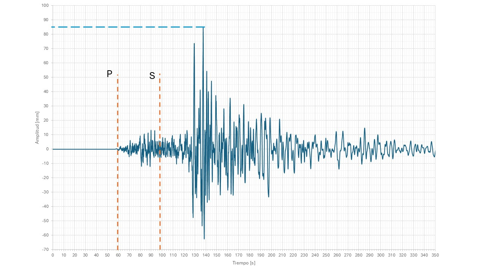
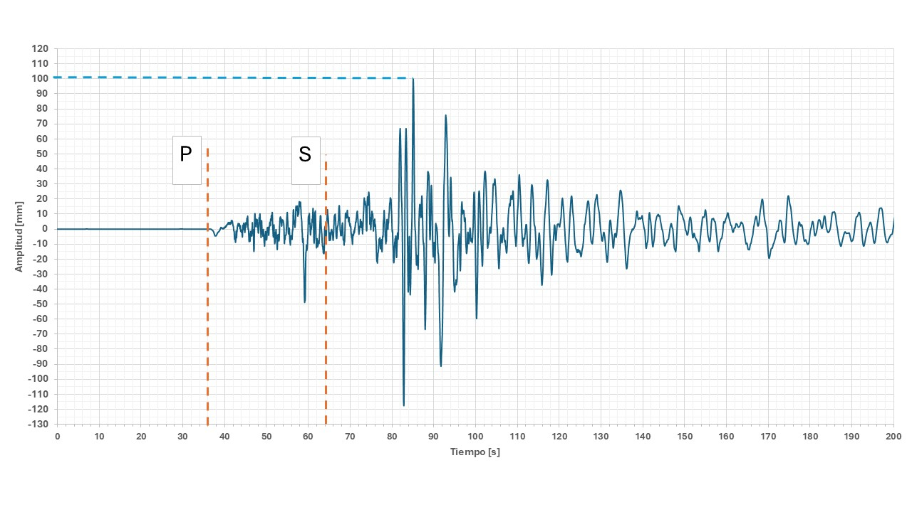
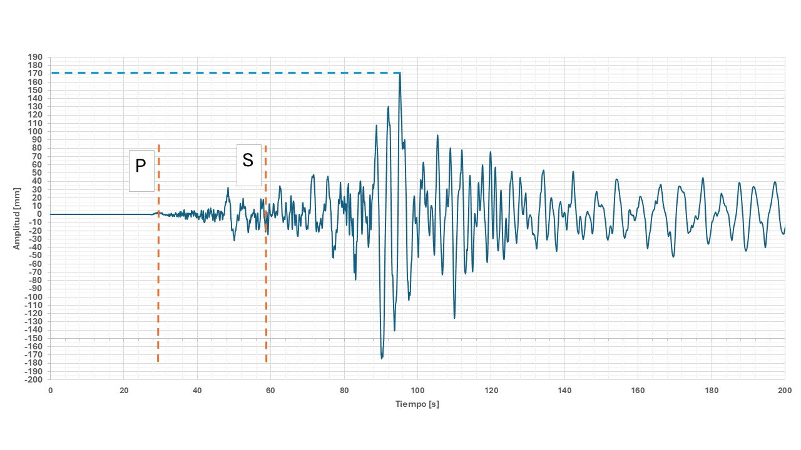

Calculadora de Magnitud (ML)
Tiempo de arribo P (s)
Tiempo de arribo S (s)
Amplitud máxima (mm)
Calcular magnitud y trazar recta
Se usa una fórmula aproximada de magnitud local tipo Richter.
Sismogramas
Lecturas para el ejercicio
  